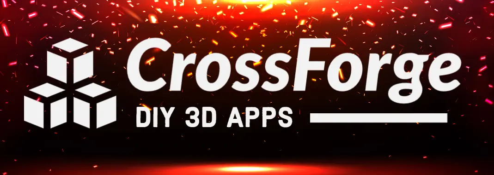
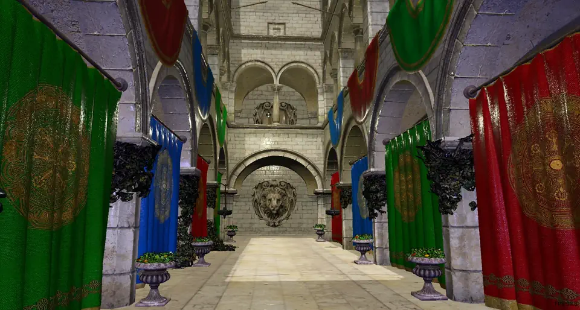
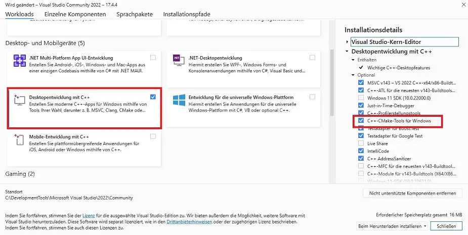
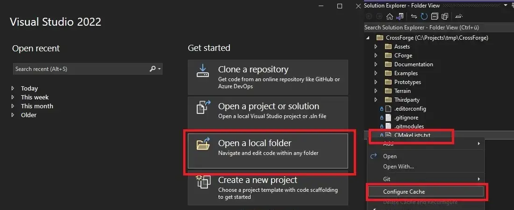

|
CrossForge v0.1.0
|
|
CrossForge v0.1.0
|



CrossForge is a cross platform graphics framework for 3D applications on Windows, Linux, and WebAssembly. It is primarily designed for educational purposes and computer graphics research. Hence it focuses solely on OpenGL as graphics API (no DirectX or Vulcan), and features extensive tutorials for computer graphics novices. If you want to learn how 3D application work from the ground up, you are at the right place.

See the examples to get a better impression of what CrossForge is capable of.
The following steps have to be performed, no matter what OS you are running.
> git clone https://github.com/Tachikoma87/CrossForge.git
The recommended tool for building CrossForge on Windows in Visual Studio. Download your preferred version from https://visualstudio.microsoft.com and make sure you select C++CMake Tools for Windows during installation. You can also add the CMake Tools using the Visual Studio Installer, if Visual Studio is already installed:

Now we need vcpkg to work with Visual Studio. Open a command prompt and type
> [path-to-vcpkg]\vcpkg integrate install
Start Visual Studio and select Open a local folder. Move to the directory where you executed the first git command and open the CrossForge folder. If the CMake configuration process does not start automatically right click on CMakeLists.txt and select configure cache. Wait for the configuration to complete, then select Build->Build All (F7) from the menu bar. After completion select CForgeSandbox.exe as starting item and select Debug->Start Debugging (F5) from the menu bar or click on the small green right facing arrow.

CrossForge uses vcpkg in manifest mode, which means that dependencies should be installed automatically. Run the following commands from the top directory to build the software:
> cmake -B out/build-lin -S . "-DCMAKE_TOOLCHAIN_FILE=[path-to-vcpkg]/scripts/buildsystems/vcpkg.cmake" > cmake --build out/build-lin
And run the sandbox with
> cd out/build-lin > ./CForgeSandbox
Install emscripten by following https://emscripten.org/docs/getting_started/downloads.html. Open a command console and change directory to CrossForge folder. From top directory run
> [path-to-emsdk]/emsdk activate latest > emcmake cmake -DWEBP_USE_THREAD=OFF -B out/build-ems -Wno-dev > cmake --build out/build-ems
To test the created website you will need a local webserver. You can create one on WSL or Linux following this tutorial: https://ubuntu.com/tutorials/install-and-configure-apache#1-overview
> sudo apt-get install xfce4 > startxfce4
@misc{CForge,
title={CrossForge: A Framework for Building Cross-Platform 3D Applications},
author={Tom Uhlmann and Contributors},
year = {2020-2023},
howpublished = {https://github.com/Tachikoma87/CrossForge},
}